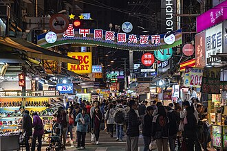

從傳統美食到流行服飾，一起探索台中的夜市文化與活力。
作者：HTML 課程示範作者 | 報導整理日期：2026 年 10 月 7 日
本文為資料整理教學報導，非現場採訪紀錄。
逢甲夜市位於台中市西屯區，自 1963 年逢甲大學建校以來逐漸發展，成為台灣最具代表性的夜市之一。
園區結合各類美食小吃、流行服飾與生活雜貨，讓人能在夜間感受熱鬧與歡樂的都市氛圍。
逢甲夜市的發展帶動了周邊商圈的繁榮，也是來台中旅遊必訪的地標之一。
夜市地址：台中市西屯區文華路與福星路口附近。
閱讀重點：特色美食、熱鬧商圈、購物與娛樂。
以下是本報導規劃的散步建議，並非官方指定路線。
逢甲夜市三個重點區域的特色與觀察重點
| 景點名稱 | 主要特色 | 建議觀察重點 |
|---|---|---|
| 文華路小吃街 | 美食攤位高度集中 | 排隊人潮與特色小吃製作過程 |
| 福星路商圈 | 連鎖品牌與流行服飾店 | 繁華街景與夜景燈光氛圍 |
| 逢甲大學正門口 | 地標建築與學生聚會場所 | 校門景觀與學生生活文化 |

逢甲夜市是台中熱鬧的觀光景點。圖片來源：維基共享資源。
請觀看下方影片認識逢甲夜市，再比較影片畫面與本文介紹的景點。
若播放器無法播放，請在 YouTube 觀看逢甲夜市介紹影片（另開分頁）。
影片為外部創作者發布的介紹，現場狀況請以最新官方資訊為準。
本報導依下列資料整理，散步順序與觀察建議由示範作者規劃。
資料整理日期：2026 年 10 月 7 日